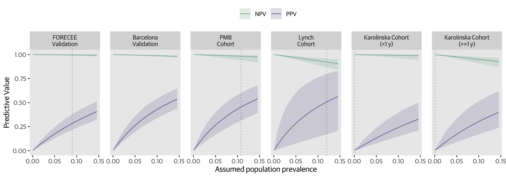

mldat_tmp <- mldat %>%
filter(!is.na(type) & set != "FORECEE Pilot") %>%
droplevels() %>%
mutate(set = factor(set, levels = c("FORECEE Validation",
"Barcelona Validation",
"PMB Cohort",
"Lynch Cohort",
"Karolinska Cohort"))) %>%
mutate(thresh1 = case_when(sum >= cut$threshold[1] & set != "Karolinska Cohort" ~ "Endometrial cancer",
sum < cut$threshold[1] & set != "Karolinska Cohort" ~ "Control",
sum >= cut$threshold[2] & set == "Karolinska Cohort" ~ "Endometrial cancer",
sum < cut$threshold[2] & set == "Karolinska Cohort" ~ "Control")) %>%
mutate(type = factor(type, levels = c("Endometrial cancer", "Control"))) %>%
mutate(thresh1 = factor(thresh1, levels = c("Endometrial cancer", "Control"))) %>%
mutate(set=as.character(set)) %>%
mutate(set = ifelse(set != "Karolinska Cohort", set,
ifelse(set == "Karolinska Cohort" & time_to_diagnosis < 365,
"Karolinska Cohort\n(<1 y)",
"Karolinska Cohort\n(>=1 y)")))
dat <- data.frame(matrix(nrow = 180, ncol = 8))
colnames(dat) <- c("set", "prev", "PPV", "ppv_lo", "ppv_hi", "NPV", "npv_lo", "npv_hi")
dat$set <- rep(unique(mldat_tmp$set), each = 30)
dat$prev <- rep(seq(from = 0.0009, to = 0.15, 0.005), 6)
for(i in 1:nrow(dat)){
tmp <- mldat_tmp %>%
filter(set == as.character(dat$set[i]))
pop_prev <- dat$prev[i]
tab <- table(tmp$thresh1, tmp$type)
rval <- summary(epi.tests(tab))
tab <- matrix(c(tab[1,1], tab[2,1], tab[1,2], tab[2,2]), ncol = 2)
colnames(tab) <- c("Case", "Control")
rownames(tab) <- c("Case", "Control")
rval2 <- BDtest(xmat=as.matrix(tab), pr=pop_prev, conf.level = 0.95)
dat$PPV[i] <- rval2$PPVNPVDAT$Estimate[2]
dat$ppv_lo[i] <- rval2$PPVNPVDAT$`Lower 97.5% limit`[2]
dat$ppv_hi[i] <- rval2$PPVNPVDAT$`Upper 97.5% limit`[2]
dat$NPV[i] <- rval2$PPVNPVDAT$Estimate[1]
dat$npv_lo[i] <- rval2$PPVNPVDAT$`Lower 97.5% limit`[1]
dat$npv_hi[i] <- rval2$PPVNPVDAT$`Upper 97.5% limit`[1]
}
dat2 <- dat %>%
pivot_longer(cols = c("PPV", "NPV"),
names_to = "type",
values_to = "value") %>%
pivot_longer(cols = c("ppv_hi", "npv_hi"),
names_to = "hi_val",
values_to = "hi") %>%
pivot_longer(cols = c("ppv_lo", "npv_lo"),
values_to = "lo",
names_to = "lo_val") %>%
filter((type == "PPV" & hi_val == "ppv_hi" & lo_val == "ppv_lo") | (type== "NPV" & hi_val == "npv_hi" & lo_val == "npv_lo")) %>%
select(set, prev, type, value, hi, lo) %>%
mutate(true = case_when(set %in% c("FORECEE Validation", "Barcelona Validation") ~ 0.09,
set == "Lynch Cohort" ~ 3/25,
set == "PMB Cohort" ~ 8/74,
grepl("Karolinska Cohort", set) ~ 0.0009)) %>%
mutate(setname = case_when(set == "FORECEE Validation" ~ "FORECEE\nValidation",
set == "Karolinska Cohort\n(<1 y)" ~ "Karolinska Cohort\n(<1 y)",
set == "Karolinska Cohort\n(>=1 y)" ~ "Karolinska Cohort\n(>=1 y)",
set == "Barcelona Validation" ~ "Barcelona\nValidation",
set == "PMB Cohort" ~ "PMB\nCohort",
set == "Lynch Cohort" ~ "Lynch\nCohort")) %>%
mutate(setname = factor(setname, levels = c("FORECEE\nValidation",
"Barcelona\nValidation",
"PMB\nCohort",
"Lynch\nCohort",
"Karolinska Cohort\n(<1 y)",
"Karolinska Cohort\n(>=1 y)")))
plot <- dat2 %>%
ggplot(aes(x = prev,
y = value)) +
geom_vline(aes(xintercept = true),
size = 0.5,
linetype = "dotted",
colour = "gray60") +
geom_ribbon(aes(ymin = lo,
ymax = hi,
fill = type),
alpha = 0.2) +
geom_line(aes(colour = type)) +
facet_wrap(~setname,
nrow = 1) +
theme(legend.position = "top") +
xlab("Assumed population prevalence") +
ylab("Predictive Value") +
scale_colour_manual(values = cols[c(5,6)],
name = "",
aesthetics = c("fill", "colour")) +
theme(panel.grid = element_blank(),
legend.key = element_blank(),
legend.position = "top",
legend.title = element_blank(),
panel.spacing.x = unit(1, "lines"))
plot